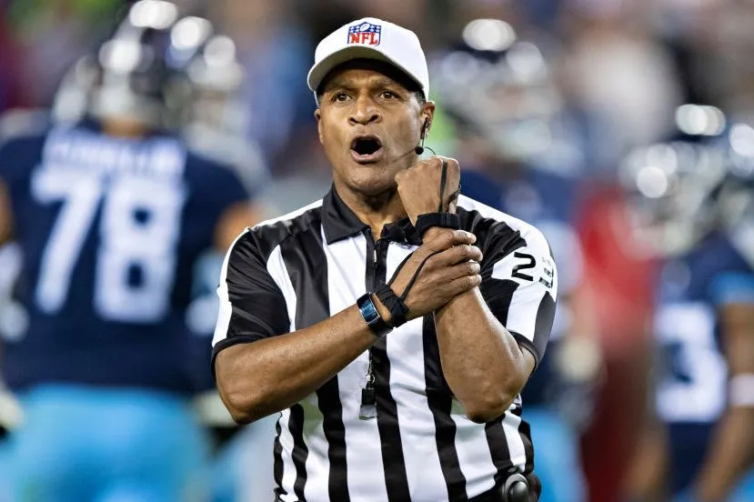

Have you ever left a game frustrated by a ref's call and wished there was accountability?
RefRank: Your voice for fair play
Our website, RefRank, is the first platform where players, coaches, and fans can rate and review school sports referees.
Find a Ref NowWith verified feedback, we aim to improve transparency, encourage fairness, and help schools hire the best officials. Think of it as Yelp—for referees. Fair play starts with fair calls.